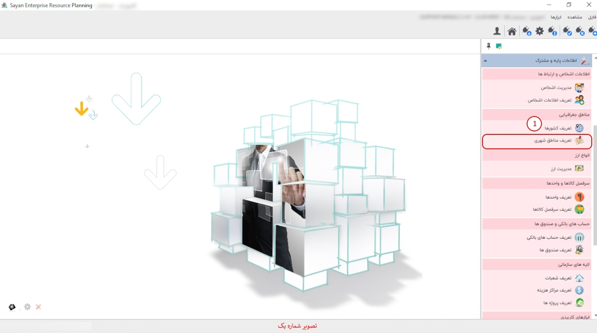
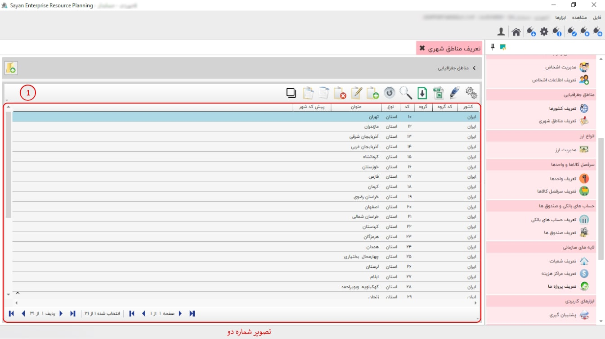
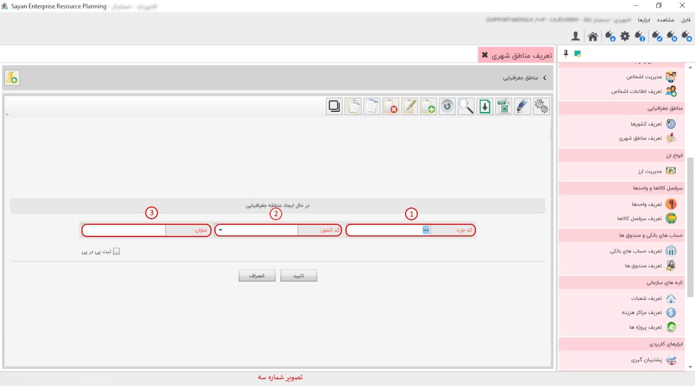

در این قسمت، شما میتوانید استانهایی که با آنها در ارتباط هستید را در سیستم تعریف کنید. با کلیک روی گزینهی تعریف مناطق شهری، صفحهی زیر باز خواهد شد.
برای ادامه مطلب به تصویر شماره دو مراجعه نمایید.
-کادر شماره یک: در این بخش، شما میتوانید به فهرست کاملی از شهرهایی که پیشتر تعریف شدهاند، دسترسی پیدا کنید. همچنین، این امکان برای شما فراهم است که شهرهای دلخواه خود را معرفی کرده و انتخاب نمایید.
این قسمت این امکان را به شما میدهد که مناطق شهری مد نظر خود را از طریق این آیکون ایجاد کنید.
برای ادامه مطلب به تصویر شماره سه مراجعه نمایید.
-کد جزء (کادر شماره یک): در این بخش، کد جزء بهصورت پیشفرض برای شما ایجاد میشود؛ به همین دلیل نیازی به تغییر در کد جزء نیست.
-کد کشور (کادر شماره دو): در این قسمت میتوانید کد کشور مدنظر خود را وارد نمایید. (الزامی نیست)
-عنوان (کادر شماره سه): در این قسمت میبایست عنوان شهر خود را وارد نمایید.